Triceratops Example Gallery#
Welcome to the Triceratops Example Gallery!
This section presents a curated collection of concise, hands-on examples illustrating the key features and modeling capabilities of the Triceratops library. Each example is:
Focused on a single, well-defined concept,
Ready to run and customize in your own workflows,
Accompanied by inline documentation and visual outputs where helpful.
Explore the gallery to get started quickly, understand how to use Triceratops effectively, and adapt these templates to accelerate your scientific modeling.
Examples are grouped by their conceptual location within the Triceratops codebase.
Data Loading and Handling#
This set of examples demonstrates how to load and handle observational data using the data modules in Triceratops. All
of the relevant data handling functionality is contained within the data subpackage.
Performing Inference with Observational Data#
This set of examples demonstrates how to perform inference using observational data with the inference modules in
Triceratops. All of the relevant inference functionality is contained within the inference subpackage, which
includes tools for loading, processing, and utilizing observational data in model fitting and analysis.
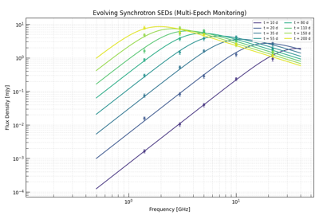
Multi-Epoch SED Fitting: Tracking Shock Evolution
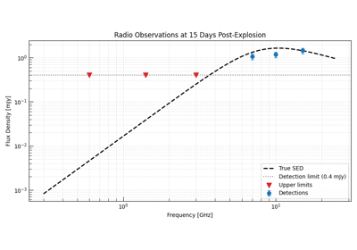
Upper Limit Constraints: Non-Detections as Information
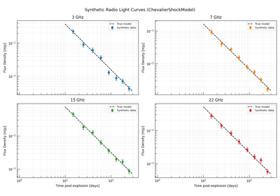
Inferring Physical Shock Parameters from a Radio Supernova
Forward Modeling with Triceratops Models#
This set of examples demonstrates how to perform forward modeling using Triceratops models in relevant scenarios. This includes how to set up models, determine parameters, and visualize results.
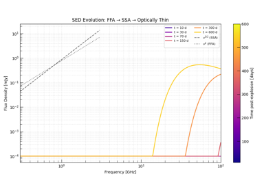
Time-Resolved Spectral Modeling: FFA Fade-out in a Radio SN
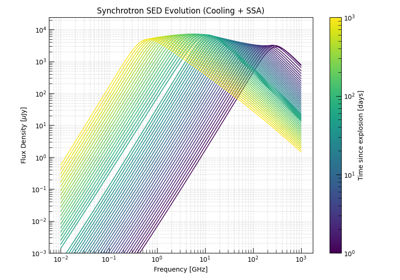
Synchrotron Emission from Fast-Cooling SN Shocks
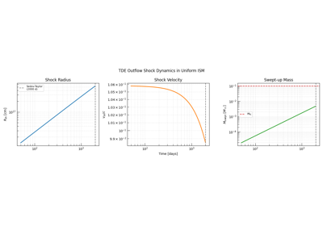
TDE Radio Afterglow: Sub-Relativistic Outflow in ISM
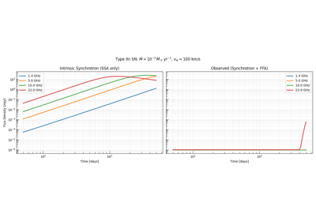
Type IIn Supernova in a Dense Circumstellar Wind
Physics Backend Examples - Shocks#
This gallery showcases examples from the dynamics module regarding shock propagation and related phenomena.
The examples illustrate how to set up simulations, configure parameters, and analyze results using the physics backend.
Physics Backend Examples - Synchrotron#
In this example gallery, we’ll showcase the radiation.synchrotron module and its capabilities.
For detailed documentation regarding synchrotron radiation physics, please refer to the
Synchrotron Radiation Theory. For notes on the synchrotron API and how to use all of the various
functions, please refer to Core Synchrotron Tools, Synchrotron Microphysics, Synchrotron Spectral Energy Distributions, and Radiative Cooling Engines.


Synchrotron Spectra from Single Electrons and Electron Populations


Electron Cooling — the Synchrotron Radiative Cooling Engine

Bolometric Synchrotron Emissivity and Equipartition


Recovering Physical Parameters from an Observed SED: the Inverse Closure


From Physical Parameters to SED Parameters: the Forward Closure
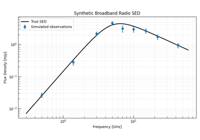
From SED to Source Size: The Inverse Closure Workflow

Physics Backend Examples — Accretion Disks#
This gallery showcases the one_zone module:
time-dependent, one-zone accretion disk models driven by a compiled Cython
explicit-Euler integrator.
The examples progress from a minimal quickstart through physical model comparisons to scenarios with external mass supply. For theoretical background, see One-Zone Accretion Disk Models: Theory. For the full API, see One-Zone Accretion Disk Models.
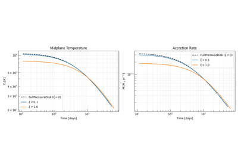
Advective Cooling in One-Zone Accretion Disks
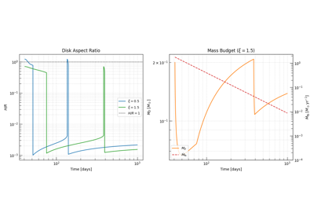
TDE Disk Evolution and Observable Signatures
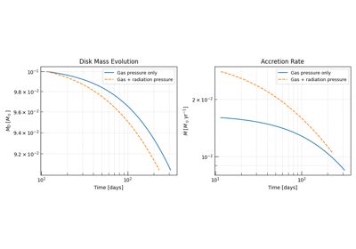
Gas Pressure vs. Full Pressure — Equation-of-State Comparison